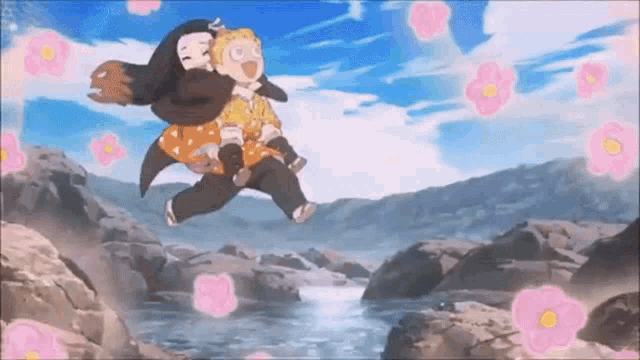
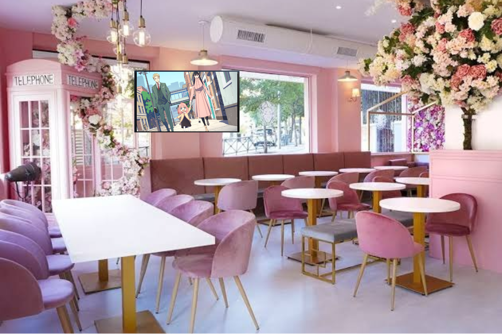

SAKURA
Nuestra cafeteria tiene como tematica la flor de cerezo(Sakura). La sakura o cerezo en flor japonés es uno de los símbolos más conocidos de la cultura japonesa. Florece al comienzo de la primavera y puede ser de distintos colores y tonalidades, especialmente de color rosa pálido.

¿Porque Florecer?
En japón Saku significa Florecer, es el motivo del nombre de nuestra cafeteria, ya que, queremos que nuestra cafeteria trasmita tranquila, alegria y comodidad, en pocas palabras, te sientas en casa. Esta flor esta asociada con la fragilidad y la transitoriedad de la vida.
Anime en todo momento
Mientras consumes en alguna de nuestras sucursales puedes disfrutar de cualquier anime que transmitimos en nuestra televisiones.

Este mes de octubre estaremos trasmitiendo los animes nuevos de esta temporada. Así que no olvides asistir a nuestra cafeteria.
Animes más relevantes de este otoño 22. |
|
|---|---|
Spyxfamily |
Es el anime mas visto de esta temporada otoño 22, ya que tiene una trama increible. |
One Piece |
Nuevos estrenos esta temporada otoño 22. |
Spyxfamily
Es el anime mas visto de esta temporada otoño 22, ya que tiene una trama increible.
One Pice
Nuevos estrenos esta temporada otoño 22.
Animes más relevantes de este otoño 22.
La proxima semana el día sabado 22 de octubre se estrenara en nuestras cafeterias el nuevo capitulo de spyxfamily.
